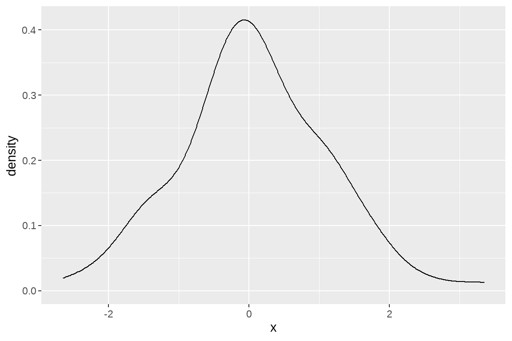
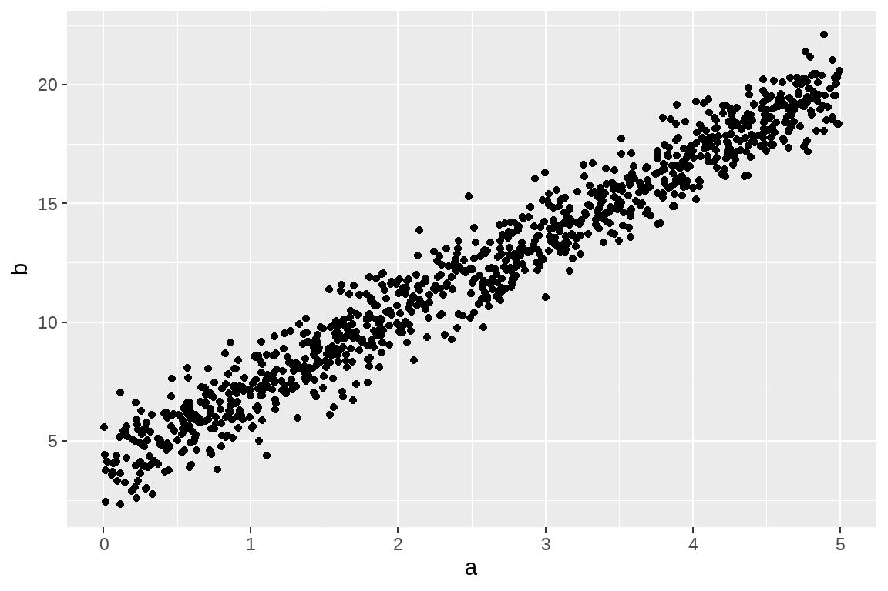
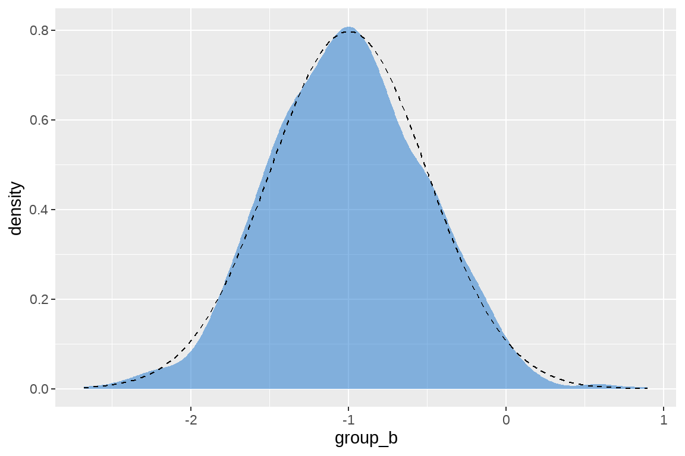
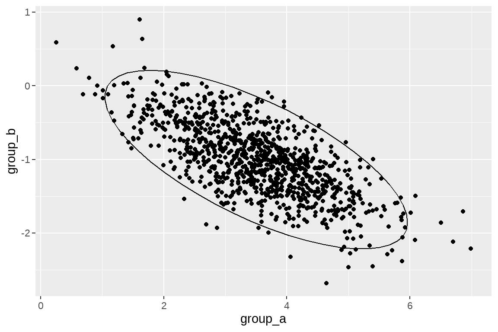
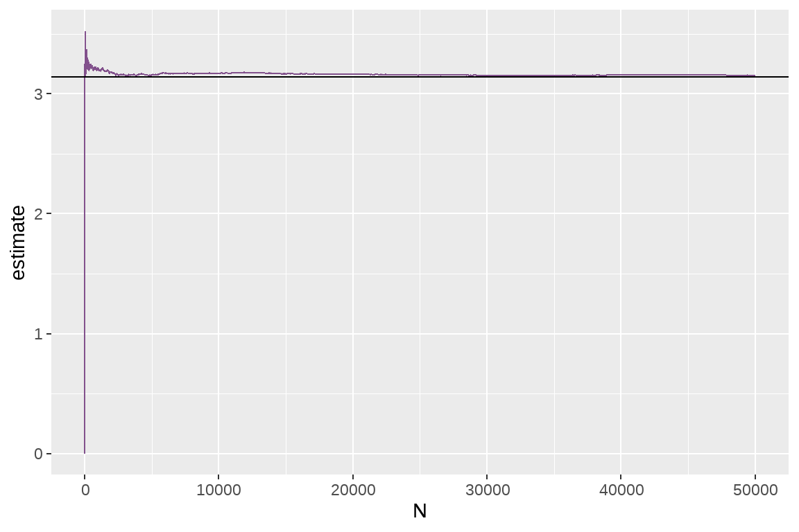
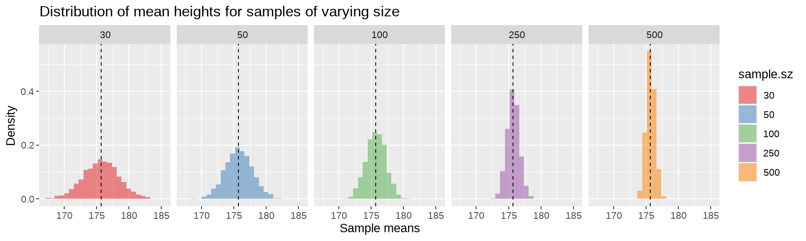

第 26 章 模拟与抽样
本章目的是在tidyverse的架构下，介绍一些模拟和抽样的知识。先回顾下Hadley Wickham提出的数据科学tidy原则，tidy思想体现在:
- 任何数据都可以规整为数据框
- 数据框的一列代表一个变量，数据框的一行代表一次观察
- 函数处理数据时，数据框进、数据框出
26.1 模拟
26.1.1 生成随机数
比如生成5个高斯分布的随机数，高斯分布就是正态分布，R语言里我们用rnorm()函数产生正态分布的随机数
## [1] 0.3070 -0.1948 -1.0236 0.1429 0.6283事实上，R内置了很多随机数产生的函数
| Distrution | | Notation | R | | R |
|---|---|---|
| Uniform | \(\text{U}(a, b)\) | runif |
| Normal | \(\text{N}(\mu, \sigma)\) | rnorm |
| Binormal | \(\text{Bin}(n, p)\) | rbinorm |
| Piosson | \(\text{pois}(\lambda)\) | rpois |
| Beta | \(\text{Beta}(\alpha, \beta)\) | rbeta |
如果大家查看帮助文档?runif，会发现每种分布都有对应的四个函数
d:densityp:cumulative probabilityq:quantiler:random
## [1] 0.3970 0.3948 0.3919 0.3882 0.3838 0.3788 0.3730
## [8] 0.3666 0.3596 0.3521在tidyverse的框架下，我们喜欢在数据框(data.frame)下运用这些函数，因为这样我们可以方便使用ggplot2来可视化，
- 例子1，我们生成100个正态分布的点，然后看看其分布

我们将模拟的正态分布和理论上正态分布画在一起
tibble(
x = rnorm(n = 100, mean = 0, sd = 1)
) %>%
ggplot(aes(x = x)) +
geom_density() +
stat_function(
fun = dnorm,
args = list(mean = 0, sd = 1),
color = "red"
) 如果我们模拟点再增加点，会越来越逼近理论上的分布。
如果我们模拟点再增加点，会越来越逼近理论上的分布。
- 例子2，在数据框(data.frame)下，建立模拟\(x\)和\(y\)的线性关系
\[ y_i = 4 + 3.2\, x_i\] 现实中，观察值往往会带入误差，假定误差服从正态分布，那么\(x\)和\(y\)的线性关系重新表述为 \[ y_i = \beta_0 + \beta_1\, x_i + \epsilon_i, \quad \epsilon \in \text{Normal}(\mu =0, \sigma =1) \]
beta_0 <- 4
beta_1 <- 3.2
epsilon <- rnorm(n = 1000, mean = 0, sd = 1)
sim_normal <- tibble(
# x_vals = runif(1000, 0, 10)
x_vals = seq(from = 0, to = 5, length.out = 1000),
y_vals = beta_0 + beta_1 * x_vals + epsilon,
)
sim_normal %>% head()
有时候为了方便，可以写简练点
tibble(
a = runif(1000, 0, 5),
b = 4 + rnorm(1000, mean = 3.2 * a, sd = 1)
) %>%
ggplot(aes(x = a, y = b)) +
geom_point() 
26.2 MASS::mvrnorm
MASS::mvrnorm(n = 1, mu, Sigma)产生多元高斯分布的随机数，每组随机变量高度相关。
比如人的身高服从正态分布，人的体重也服从正态分布，同时身高和体重又存在强烈的关联。
n: 随机样本的大小mu: 多元高斯分布的均值向量Sigma: 协方差矩阵，主要这里是大写的S (Sigma)，提醒我们它是一个矩阵，不是一个数值
a <- 3.5
b <- -1
sigma_a <- 1
sigma_b <- 0.5
rho <- -0.7
mu <- c(a, b)
cov_ab <- sigma_a * sigma_b * rho # 协方差d <- MASS::mvrnorm(1000, mu = mu, Sigma = sigma) %>%
data.frame() %>%
set_names("group_a", "group_b")
head(d)d %>%
ggplot(aes(x = group_a)) +
geom_density(color = "transparent",
fill = "dodgerblue3",
alpha = 1/2) +
stat_function(fun = dnorm,
args = list(mean = 3.5, sd = 1),
linetype = 2
) 
d %>%
ggplot(aes(x = group_b)) +
geom_density(color = "transparent",
fill = "dodgerblue3",
alpha = 1/2) +
stat_function(fun = dnorm,
args = list(mean = -1, sd = 0.5),
linetype = 2
) 
d %>%
ggplot(aes(x = group_a, y = group_b)) +
geom_point() +
stat_ellipse(type = "norm", level = 0.95)
我们回头验算一下
d %>% summarise(
a_mean = mean(group_a),
b_mean = mean(group_b),
a_sd = sd(group_a),
b_sd = sd(group_b),
cor = cor(group_a,group_b),
cov = cov(group_a,group_b)
)26.3 蒙特卡洛
这是我研究生时候老师布置的一个的题目，当时我用的是C语言代码，现在我们有强大的tidyverse

points <- points %>%
mutate(inside = map2_dbl(.x = x, .y = y, ~if_else(.x**2 + .y**2 < 1, 1, 0))) %>%
rowid_to_column("N")正方形的面积是1，圆的面积是\(\pi r^2 = \frac{1}{4} \pi\)，如果知道两者的比例，就可以估算\(\pi\)
points %>%
ggplot() +
geom_line(aes(y = estimate, x = N), colour = "#82518c") +
geom_hline(yintercept = pi) 
26.4 抽样与样本
26.4.1 总体分布
假定一个事实，川师男生总体的平均身高和身高的标准差分别为
那么我们可以模拟分布情况如下
pop.distn <-
tibble(
height = seq(100, 250, 0.5),
density = dnorm(height, mean = true.mean, sd = true.sd)
)
ggplot(pop.distn) +
geom_line(aes(height, density)) +
geom_vline(
xintercept = true.mean,
color = "red",
linetype = "dashed"
) +
geom_vline(
xintercept = true.mean + true.sd,
color = "blue",
linetype = "dashed"
) +
geom_vline(
xintercept = true.mean - true.sd,
color = "blue",
linetype = "dashed"
) +
labs(
x = "Height (cm)", y = "Density",
title = "川师男生身高分布"
)
26.4.2 样本
假定我们从中抽取30个男生身高样本
然后看看样本的直方图
sample.a %>%
ggplot(aes(x = height)) +
geom_histogram(aes(y = stat(density)),
fill = "steelblue",
alpha = 0.75,
bins = 10
) +
geom_line(
data = pop.distn,
aes(x = height, y = density),
alpha = 0.25, size = 1.5
) +
geom_vline(xintercept = true.mean, linetype = "dashed", color = "red") +
geom_vline(xintercept = mean(sample.a$height), linetype = "solid")
红色的虚线代表分布的总体的均值，黑色实线代表30个样本的均值，
也就是说，基于这30个观察值的样本，我们认为川师男生的身高均值为175.743cm，方差为17.3027
可能有同学说，这个样本太少了，计算的均值还不够科学，会以偏概全。于是又重新找了30个男生，和上次类似，用rnorm函数模拟，我们记为样本b
再来看看这次样本的分布
sample.b %>%
ggplot(aes(x = height)) +
geom_histogram(aes(y = stat(density)),
fill = "steelblue", alpha = 0.75, bins = 10
) +
geom_line(
data = pop.distn, aes(x = height, y = density),
alpha = 0.25, size = 1.5
) +
geom_vline(xintercept = true.mean, linetype = "dashed", color = "red") +
geom_vline(xintercept = mean(sample.a$height), linetype = "solid")
同样，我们计算样本b的均值和方差
这次抽样的结果，均值为173.711cm，方差为14.8641
和样本a比，有一点点变化。不经想问，我能否继续抽样呢？结果会有变化吗？为了避免重复写代码 ，我把上面的过程整合到一起，写一个子函数，专门模拟抽样过程
rnorm.stats <- function(n, mu, sigma) {
the.sample <- rnorm(n, mu, sigma)
tibble(
sample.size = n,
sample.mean = mean(the.sample),
sample.sd = sd(the.sample)
)
}于是，我们又可以继续模拟了。注意我们之前设定的总体分布的均值和方差
yes，代码工作的很好，但不过只是代码减少了一点点，仍然只是一次抽样（这里30个样本为一次抽样），我们的目的是反复抽样， 抽很多次的那种喔。
那我们用purrr包的rerun函数偷个懒，
哇，一下子抽了2500个样本,全部装进了df.sample.of.30这个数据框， 偷偷看一眼呢
回过头看看df.samples.of.30是什么：
- 从川师的男生中随机抽取30个，计算这30个人身高的均值和方差，这叫一次抽样
- 把上面的工作，重复2500次，得到2500个均值和方差
- 2500个均值和方差，组成了一个数据框
我们发现每次抽样的均值都不一样，感觉又像一个分布(抽样的均值分布)，我们画出来看看吧
df.samples.of.30 %>%
ggplot(aes(x = sample.mean, y = stat(density))) +
geom_histogram(bins = 25, fill = "firebrick", alpha = 0.5) +
geom_vline(xintercept = true.mean, linetype = "dashed", color = "red") +
labs(
title = "抽样2500次（每次30个男生）身高均值的分布",
subtitle = "Distribution of mean heights for 2500 samples of size 30"
) 注意到，这不是男生身高的分布，而是每次抽样计算的均值构成的分布.
注意到，这不是男生身高的分布，而是每次抽样计算的均值构成的分布.
为了更清楚的说明，我们把整体的分布(灰色曲线)、样本a（蓝色直方图）、抽样的均值分布（红色直方图）三者画在一起。
df.samples.of.30 %>%
ggplot(aes(x = sample.mean, y = stat(density))) +
geom_histogram(bins = 50, fill = "firebrick", alpha = 0.5) +
geom_histogram(
data = sample.a,
aes(x = height, y = stat(density)),
bins = 11, fill = "steelblue", alpha = 0.25
) +
geom_vline(xintercept = true.mean, linetype = "dashed", color = "red") +
geom_line(data = pop.distn, aes(x = height, y = density), alpha = 0.25, size = 1.5) +
xlim(125, 225)
样本的均值分布，是个很有意思的结果，比如，我们再选30个男生再抽样一次，我们可以断定，这次抽样的均值会落在了红色的区间之内。
然而，注意到，必须限定再次抽样的大小仍然是30个男生，以上这句话才成立。
这里计算的是抽样(样本大小为30)均值分布，而不是整体的均值分布。言外之意，样本大小可以是其它的呗， 那就把样本调整为50、100、250、500分别试试看
df.samples.of.50 <-
rerun(2500, rnorm.stats(50, true.mean, true.sd)) %>%
bind_rows()
df.samples.of.100 <-
rerun(2500, rnorm.stats(100, true.mean, true.sd)) %>%
bind_rows()
df.samples.of.250 <-
rerun(2500, rnorm.stats(250, true.mean, true.sd)) %>%
bind_rows()
df.samples.of.500 <-
rerun(2500, rnorm.stats(500, true.mean, true.sd)) %>%
bind_rows()忍不住想画图看看，每次抽取的男生数量不同，均值的分布会有不同？
df.combined <-
bind_rows(
df.samples.of.30,
df.samples.of.50,
df.samples.of.100,
df.samples.of.250,
df.samples.of.500
) %>%
mutate(sample.sz = as.factor(sample.size))df.combined %>%
ggplot(aes(x = sample.mean, y = stat(density), fill = sample.sz)) +
geom_histogram(bins = 25, alpha = 0.5) +
geom_vline(xintercept = true.mean, linetype = "dashed") +
facet_wrap(vars(sample.sz), nrow = 1) +
scale_fill_brewer(palette = "Set1") +
labs(
x = "Sample means", y = "Density",
title = "Distribution of mean heights for samples of varying size"
)
随着样本大小由30增加到500，抽样的均值分布围绕着越来越聚合到实际的均值，或者说随着样本大小的增多，对均值估计的不确定性越小。
sampling.distn.mean.table <-
df.combined %>%
group_by(sample.size) %>%
summarize(
mean.of.means = mean(sample.mean),
sd.of.means = sd(sample.mean)
)
sampling.distn.mean.table有个统计学上的概念需要明确。
输出结果的第三列sd.of.means 是不同样本大小(30,50,100,250,500)下，反复抽样后平均数分布的标准差。
数学上，如果已知总体的标准差(\(\sigma\))，那么抽取无限多份大小为 \(n\) 的样本，每个样本各有一个平均值，所有这个大小的样本之平均值的标准差可证明为
\[ \frac{\sigma}{\sqrt{n}} \] 即，平均值的标准误差。
下面我们画图看看，模拟出来的\(sd.of.means\)和理论值\(\frac{\sigma}{\sqrt{n}}\)是否一致。
注意到这里的\(\sigma\)是总体的标准差，即最开始我们设定的川师男生身高的标准差true.sd. 也就说，理论上
df.se.mean.theory <- tibble(
sample.size = seq(10,500,10)
) %>%
mutate(std.error = true.sd/sqrt(sample.size))
df.se.mean.theorysampling.distn.mean.table %>%
ggplot(aes(x = sample.size, y = sd.of.means)) +
geom_point() +
geom_line(aes(x = sample.size, y = std.error),
data = df.se.mean.theory,
color = "red") +
labs(
x = "Sample size", y = "Std Error of Mean",
title = "平均值标准误差随样本大小变化（理论值和模拟值对比）"
)
两者吻合的很好。
刚刚我们看到的，抽样均值分布随着样本大小变化而变化。可以试想下，抽样的其他统计量分布（方差，中位数），是不是也随着样本大小变化而变化呢？
sampling.distn.sd.table <-
df.combined %>%
group_by(sample.size) %>%
summarize(
mean.of.sds = mean(sample.sd),
sd.of.sds = sd(sample.sd)
)
sampling.distn.sd.table答案是肯定的，样本量的增多，抽样方差的不确定性减少。